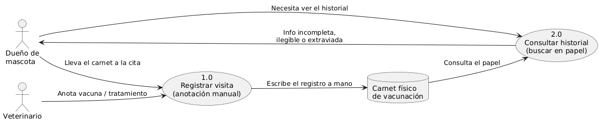
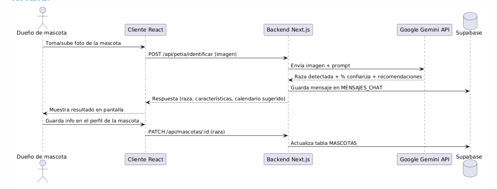
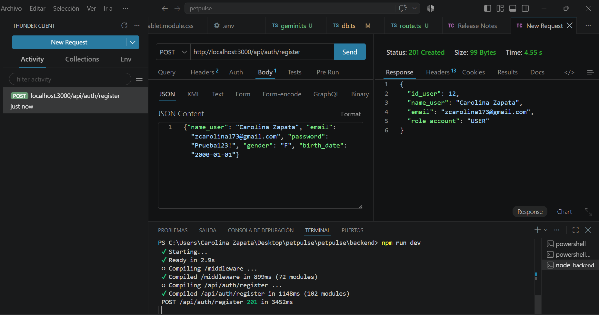
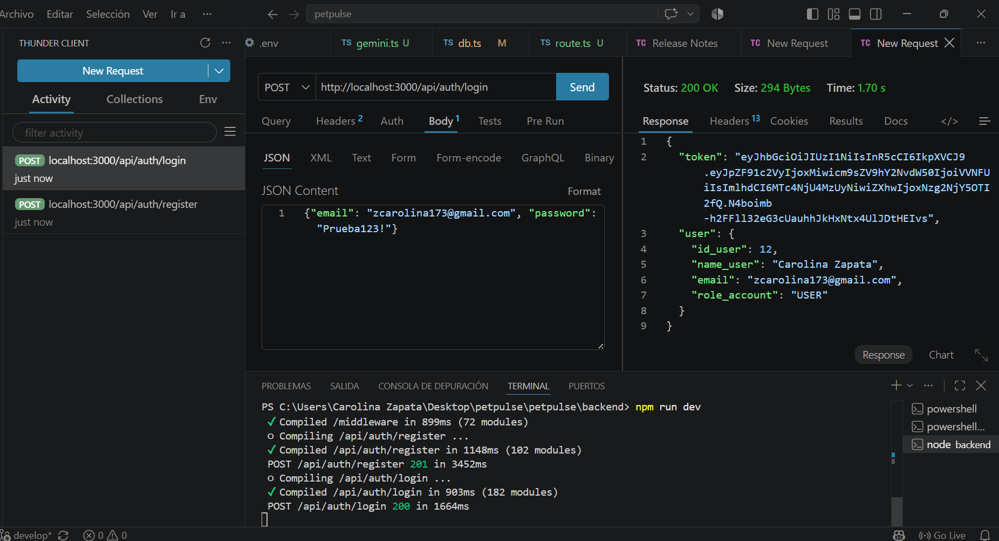
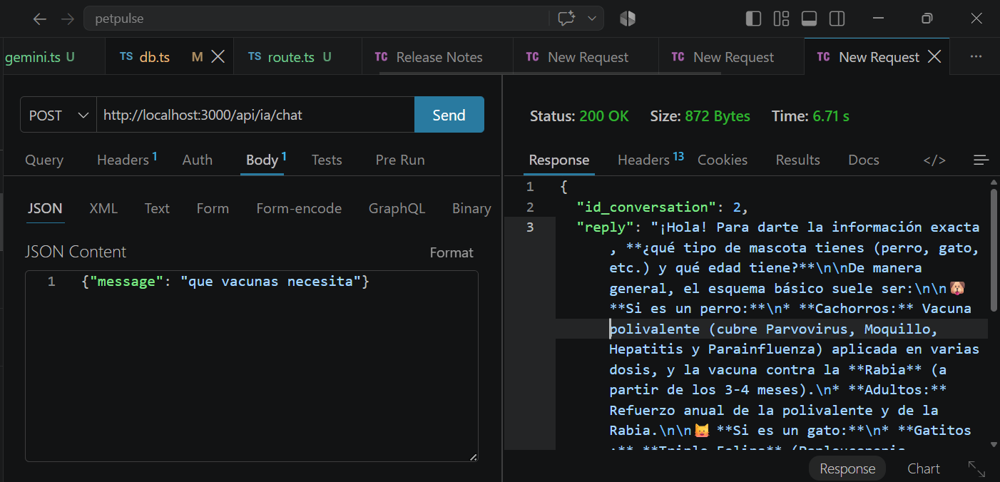

Sistemas de Información I — UNET
III Unidad — Análisis y Diseño de SistemasPor medio de esta estructura se relaciona la teoría formal de ingeniería de sistemas con el desarrollo práctico de PETPULSE, conforme al esquema solicitado por la cátedra y al marco de Whitten, Bentley y Barlow.
El análisis de sistemas es la fase del ciclo de vida de desarrollo de sistemas (CVDS) en la que se estudia el problema de negocio —sin asumir todavía una solución técnica— con el fin de identificar los datos, los procesos, los sucesos y las condiciones que un futuro sistema deberá soportar. Es el puente entre "qué necesita el negocio" y "qué debe construirse", y su calidad determina directamente la calidad del diseño posterior: un modelo de datos o de procesos mal analizado se arrastra como defecto hasta la implementación.
En PETPULSE, el análisis partió de un problema real y vivido por el propio equipo (dueños de mascotas que pierden el carnet de vacunación o no recuerdan el historial médico al cambiar de veterinario). Antes de elegir React, Node.js o Supabase, el equipo documentó el problema mediante DCA, PIECES, entrevistas y casos de uso (ver Fase 1 — Investigación de Hechos), y solo después tradujo esos hallazgos en un modelo de datos (DER) y de procesos (DFD) — respetando la separación entre análisis (qué) y diseño (cómo).
PIECES es un marco de diagnóstico que clasifica cualquier problema de un sistema en seis categorías: Performance (rendimiento), Information (información), Economics (economía), Control/Security (control y seguridad), Efficiency (eficiencia) y Service (servicio). Se usa para comparar, categoría por categoría, la situación "sin sistema" contra la situación "con el sistema propuesto", de modo que cada mejora quede justificada y no sea solo una lista de funciones.
| Dimensión PIECES | Situación Inicial (Sin el Sistema) | Situación Objetivo (Con PETPULSE) |
|---|---|---|
| P — Rendimiento | Buscar el historial médico de la mascota (carnet físico, notas sueltas) toma minutos y depende de tener el papel a mano. | Historial clínico centralizado y consultable al instante desde el panel de la mascota. |
| I — Información | Datos incompletos, ilegibles o desactualizados en carnets y notas en papel; sin registro de qué vacunas ya se aplicaron. | Registros estructurados (tabla EVENTO_SALUD en Supabase) con tipo, título, fecha y estado por evento. |
| E — Economía | Citas y tratamientos olvidados que derivan en gastos evitables (re-vacunación, complicaciones por desparasitación tardía). | Recordatorios automáticos que reducen citas perdidas y tratamientos incompletos. |
| C — Control y Seguridad | Sin respaldo: si el carnet físico se pierde, la información desaparece por completo. | Autenticación de usuarios y datos persistidos en Supabase, con respaldo en la nube. |
| E — Eficiencia | El dueño repite información a cada veterinario nuevo; el veterinario re-registra datos ya existentes. | Historial reutilizable y compartible desde el propio dispositivo del dueño. |
| S — Servicios | Dueños primerizos desconocen calendarios de vacunación según raza o especie. | Asistencia PetIA (Gemini) que identifica la raza y sugiere calendario de cuidados. |
Se documentan aquí las tres fases de análisis, articuladas con los cuatro bloques elementales de todo sistema de información: Datos, Procesos, Interfaces y Ubicación/Red.

Figura 3.1 — DFD del estado actual: control veterinario con carnet físico (antes de PETPULSE)
ON DELETE CASCADE).USUARIOS,
MASCOTAS, EVENTO_SALUD, etc.) y de la
lógica de procesos requerida (los 6 procesos del DFD Nivel 1).El diseño de sistemas es la transición desde los requerimientos lógicos (qué debe hacer el sistema) hacia la especificación física de la solución de software (cómo se construye): elegir tecnologías, definir el esquema físico de la base de datos, diseñar las pantallas y decidir dónde se ejecuta cada componente en la red.
PETPULSE usa una arquitectura cliente/servidor multicapas
distribuida en la nube: el frontend (React + Vite +
TypeScript, dividido por breakpoint en versiones
Desktop/Tablet/Mobile mediante el hook useBreakpoint())
consume una API REST construida sobre Next.js; la persistencia de
datos y el almacenamiento de imágenes residen en
Supabase (Postgres + Storage); la inferencia de IA
para identificación de razas y el chat contextual se delegan a
Google Gemini (modelo
gemini-3.6-flash); y la ubicación de clínicas usa la
API de Google Maps. Se eligió esta arquitectura por separar
claramente presentación, lógica de negocio y persistencia, y por
permitir que cada integrante trabajara su capa de frontend sin
bloquear a los demás.
chat-images) para las imágenes del chat de
IA.Objetivos y Funciones: construir los especímenes y modelos detallados del software antes y durante la codificación.
| Bloque | Especificación física en PETPULSE |
|---|---|
| Datos | Esquema físico normalizado en Supabase (3FN): USUARIOS, MASCOTAS, SESIONES, EVENTO_SALUD, MENSAJES_CHAT, más las tablas de IA (ai_conversations, ai_messages), con reglas ON DELETE CASCADE. |
| Procesos | DFD de implantación derivado del DFD Nivel 1 (6 procesos esenciales) especificando qué corre en el cliente React y qué en el backend Next.js (ej. ON-LINE: Identificar raza con IA). |
| Interfaces | Mockups de alta fidelidad en Figma para las tres versiones (Desktop/Tablet/Mobile), aplicando el sistema de diseño oficial del proyecto (paleta Verde Salvia / Coral Suave, tipografía Poppins + Inter, regla 60-30-10). |
| Red/Ubicación | Diagrama de despliegue: cliente (navegador) ↔ backend Next.js ↔ Supabase (Postgres + Storage) ↔ APIs externas (Gemini, Google Maps). |
Técnicas y Herramientas Utilizadas: herramientas de
prototipado UI (Figma), diagramas de secuencia (PlantUML) para los
flujos principales (registro, agendamiento, chat de IA), y acceso a
datos mediante el cliente oficial @supabase/supabase-js
(consultas nativas de Supabase, sin ORM intermedio), incluyendo
Supabase Storage para las imágenes (bucket de chat y campo
pet_image_url en la tabla de mascotas).

Figura 4 — Diagrama de secuencia: Identificar raza con IA (PlantUML)
Validación funcional de la API REST con Thunder Client (cliente REST integrado a VS Code, equivalente a Postman), sobre el backend Next.js corriendo en local.

Figura 5 — Prueba de POST /api/auth/register (201 Created) — Thunder Client

Figura 6 — Prueba de POST /api/auth/login (200 OK) — Thunder Client

Figura 7 — Prueba de POST /api/ia/chat (200 OK) — Thunder Client
| Fase de Diseño | Técnica / Herramienta Utilizada | Propósito Específico en PETPULSE | Evidencia en el Blog |
|---|---|---|---|
| Diseño de Datos | Supabase (Postgres) — Table Editor / SQL Editor | Diseño del esquema físico de la base de datos y sus relaciones en 3FN. | Ver Figura 1 — DER (Investigación y Modelado) |
| Diseño de Procesos | PlantUML — diagramas de secuencia | Especificar el intercambio de mensajes entre Cliente, Backend, Gemini y Supabase para los casos de uso principales. | Ver Figura 4 — Diagrama de secuencia (más arriba en esta página) |
| Diseño de Interfaces | Figma | Diseñar la experiencia e interfaz de usuario (UI/UX) por breakpoint. | Ver prototipo en Figma |
| Control y Prueba | Thunder Client (VS Code) / Git & GitHub | Control de versiones por rama (feature/multimedia-*, feature/SInformacion-*) y validación funcional de endpoints (auth, IA). |
Ver repositorio en GitHub — Figuras 5, 6 y 7 — pruebas de endpoints (más arriba) |